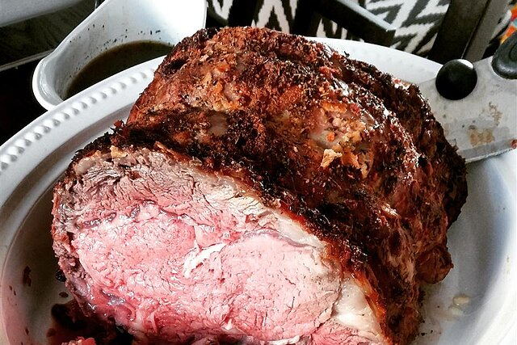

A Prime Rib Christmas

Prime Ribby In This Tinny
Prime rib tends to steal the show, so you want to serve it with dishes that will match its indulgent flavor without upstaging it.
For Christmas dinner, this means foods like buttery dinner rolls, an in-season salad, traditional sides, and pie.
Ingredients
- Classic Dinner Rolls
- Chopped Brussels Sprout Salad
- Cheesy Creamed Spinach
- Caramel Pecan Pie
Steps
- Salt the roast and let it sit at room temp.
- Preheat the oven to 500 F
- Season the roast
- Place the roast fat side up for 15 minutes
- Lower the oven to 325 F to finish roasting